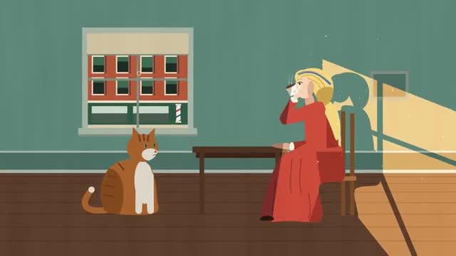
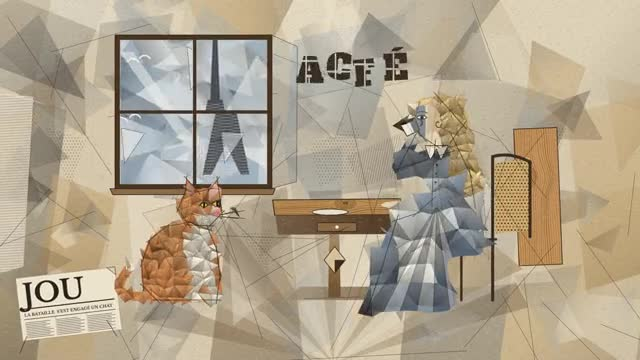
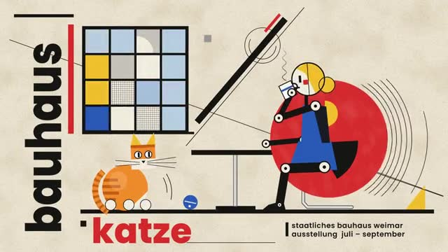
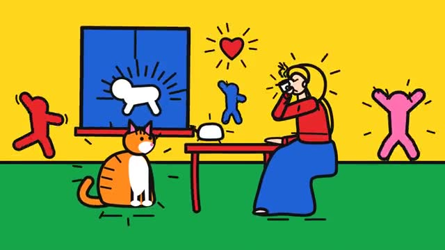
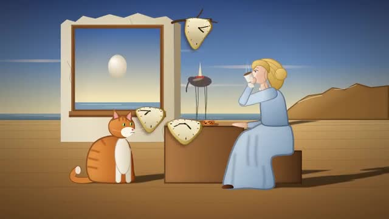
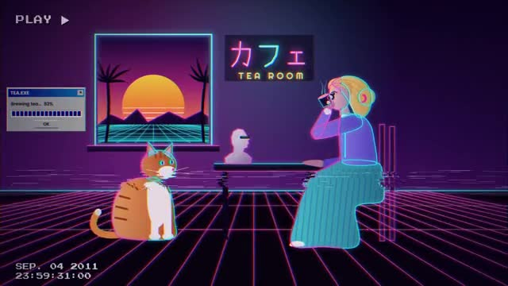

Library / Art Styles and Movements
154 keywords in this category, each one tested and explained in plain language.
Pick keywords as you browse, then press Copy for AI and paste into ChatGPT, Claude or any AI. Copy keywords gives a plain list for Midjourney or Seedance.
Anamorphic chalk illusions on streets that leap into three dimensions from one viewpoint.
Pictures drawn entirely with keyboard characters; terminal-era charm.
Art confronting the discomforting side of the body and decay; beauty's uneasy shadow.
Sleek non-representational forms suggesting speed, tech, and tomorrow: chrome curves and light trails.
Romanticism's awe and emotion expressed through pure shape and color instead of scenery.
Circuitry, data, and interface shapes abstracted into pattern and texture.
Psychedelic intensity: melting patterns, electric color, perception turned up too far.
Vaporwave's harsher cousin: acid-bright gradients, warped grids, digital hallucination.
Victorian silhouettes and tailoring celebrated through African fabrics, patterns, and presence.
Live-coded rave visuals: generative geometry pulsing to algorithmic beats.
Art generated by rules and code: systems produce the image, the artist designs the system.
Umbrella counterculture styling: band tees, piercings, DIY edge across subcultures.

Quiet American scenes from the 1920s to the 1950s: diners, hotel rooms and city windows with hard-edged sunlight, flat shadows and people lost in their own thoughts.
Pre-digital texture: film grain, tape warble, prints with real physical history.

Early 1900s painting that breaks people and objects into overlapping see-through shards, showing several sides at once, mostly in browns, greys and muted ochre.
Distorted imagery that resolves correctly only from a specific angle or reflection.
English gothic flavor: stone churches, misty moors, ravens, and restrained dread.
Japanese underground theatre fashion: dark vintage kimono elements, dramatic makeup, Showa-era shadow.
Aged elegance gone beautifully to seed: peeling gilt, foxed paper, dusty velvet.
Italian movement making art from humble materials: rags, soil, rope, found scraps as fine art.
Nature rebuilt synthetically: plastic flowers, LED forests, lab-grown landscapes.
Three-dimensional collage: sculptures built from found objects glued into new meaning.
Landscapes where air is the subject: haze, depth, and weather doing the storytelling.
Art designed to overlay the physical world: floating layers, digital ghosts in real space.
Pop-culture imagery bent into dream logic: glossy, strange, and saturated.
Baroque drama plus rococo froth: maximum ornament, zero restraint.
Seventeenth-century drama: deep shadow, rich fabric, motion and emotion at full volume.

The 1920s German design school look: circles, squares and triangles in red, yellow, blue and black, strong grids and clean sans-serif lettering.
Imagery built from 1s and 0s: code as texture, data as portrait.
Flesh fused with machine in intricate detail; Giger-adjacent dark elegance.
Abstract forms echoing living shapes: amoebas, kidneys, curves that feel grown not drawn.
Precise, loving plant illustration in the tradition of scientific field guides.
Bullet-journal bubble lettering: rounded, bold, friendly letterforms and sticker-like flourishes.
Goth cheerfulness: black-and-neon palettes, glossy textures, cute darkness invented by pop artist Kerli.
Exaggerated portraiture that amplifies a subject's most recognizable features with affection.
Simplified, exaggerated character rendering with bold outlines and expressive features.
Clean modernist design with fashion polish: neutral palettes, sculptural furniture, quiet money.
Deliberately naive crayon-and-marker rendering: wobbly lines, wrong proportions, pure joy.
8-bit game aesthetics: pixel color palettes, sprite logic, console-era charm.
1980s Japanese city-pop album art: airbrushed sunsets, convertibles, neon skylines, easy glamour.
Bold inked panels, dynamic poses, halftone dots and action-ready composition.
Pure geometric abstraction with no reference to the real world; math made visual.
Rural Americana warmth: barns, gingham, golden fields, porch-light hospitality.
Fairy grunge wired into the machine: glitching wings, LED moss, digital decay over woodland whimsy.
Internet-native visual culture: interfaces, avatars, meme textures, and screen-glow life.
Goth fused with rave tech: black PVC, neon dreads, goggles, industrial club lighting.
Digital decay aesthetics: corrupted textures, terminal green, grime rendered in pixels.
Flesh-and-machine rebellion: visible implants, wires, dystopian grit with attitude.
Paint pressed between surfaces and pulled apart, leaving branching accidental textures surrealists loved.
Art deliberately made from other art: remix, homage, and quotation as method.
Rendered motion-picture styling: smooth gradients, expressive characters, animated-feature polish.
Impressionist brushwork born digital: loose light-dabbed strokes with modern color freedom.
Japanese street fashion built from antique European dolls: layered vintage fabrics, religious motifs, dark fairy-tale trims.
Playful margin-of-the-notebook drawing: loose, dense, and cheerfully unserious.
Split-personality cute: one half sweet pastels, the other half dark or edgy, in a single design.
Environment-centered art practice: living materials, land collaboration, ecological storytelling.
Early-2000s mall goth mood: black layers, side-swept fringe, checkerboard, eyeliner, and feelings.
Painting with molten pigmented wax: luminous layers, fused textures, ancient technique.
Buildings as emotion: sweeping sculptural forms, distorted brick, structures that feel.
Dark academia's bookish charm with mushrooms, moth wings, and forest-library light.
Woodland whimsy dragged through the mud: fairy wings and lace with dirt, moss, and distressed layers.
Wild early-modern color: nature painted in unapologetic, non-realistic hues.
Trained artists painting deliberately childlike; sophistication wearing innocence.
Human figures painted with raw, emotional distortion; feeling over anatomy.
Traditional community art forms: handmade, decorative, passed down rather than taught in academies.
Everyday objects recontextualized as art, duchampian mischief included.
Compositions built from scavenged words: newspaper cutouts, old letters, ransom-note poetry.
Irreverent 1960s California movement: crude, funny, ceramic-heavy anti-elegance.
Anthropomorphic animal character art with expressive, stylized designs.
Central Indian tribal art: animals and trees filled with rhythmic dot-and-dash patterns.
American gothic dread: lonely farmhouses, crows on wires, faith and dust.
Lowbrow street-pop blend: playful characters, bold outlines, KAWS-adjacent attitude.
Scratched-surface mark-making: images incised into plaster, paint, or stone.
Worn, layered, deliberately undone: flannel, ripped denim, faded film texture, a little grime.
Pacific Northwest Indigenous formline art: bold ovoids, split forms, powerful crest animals.
Crisp geometric color fields with razor-clean boundaries; no brushwork, no blending.
1920s Black American artistic flowering: jazz-age portraiture, bold dignity, rhythmic composition.
Editorial runway polish: dramatic styling, sculptural garments, magazine-cover confidence.
Hopi visual tradition: kachina imagery, pottery motifs, desert palettes with deep symbolism.
Detective-story shadow in deep space: neon-lit starships, trench coats among the stars.
Symbol-dense sacred-art styling: gold leaf, flat perspective, figures loaded with meaning.
General illustrated rendering: visible artistic interpretation rather than photographic realism.
Himalayan miniature school: lyrical romance scenes, delicate faces, lush green landscapes.
Japanese dry rock garden aesthetic: raked gravel, placed stones, emptiness as design.
Cute-culture meets gaming setup: pastel peripherals, plushies, RGB glow softened into candy colors.
Art built around real or implied movement: spinning, swaying, optically vibrating forms.
Rajasthani miniature style famed for elongated eyes and elegant, lotus-like profiles.
Earth itself as medium: spirals of stone, lines in desert, art at landscape scale.
Soft feminine styling built around lilac and lavender tones: dreamy, gentle, unapologetically pretty.
Clean continuous linework with minimal or no shading; elegance through economy.
Faceted geometric rendering from early 3D: subjects built from visible triangles.
1850-70 American style of glassy light and stillness: transparent skies, mirror water, hushed glow.
Gestural non-objective painting focused on color, brushwork, and feeling over structure.
Patterns formed by magnetic force: iron filings, ferrofluid spikes, invisible fields made visible.
Late-Renaissance elegance stretched strange: elongated figures, acidic color, sophisticated unease.
1980s Italian design rebellion: squiggles, clashing pastels, terrazzo, geometry with a sense of humor.
Multiple materials in one work: paint over collage over ink over fabric.
Forest-girl fashion: layered natural fabrics, earthy tones, dressed like you live in the woods gently.
Gods, monsters, and legends rendered with epic-narrative weight.
Untrained-artist charm: flattened perspective, honest color, sincerity over technique.
Lush nature-first styling: abundant flora, organic shapes, celebration of living green.
Cat-eared characters and feline motifs from Japanese pop culture.
1950s-60s revival of dada mischief: everyday objects, irony, and anti-art gestures.
Gothic architecture and mood revived with modern drama: pointed arches, tracery, contemporary darkness.
Rococo's frills revived with modern self-awareness: pastel excess, ornamental overload, wink included.
1980s flamboyant glamour: ruffles, drama makeup, synth-pop theatricality.
After-dark glamour: champagne gold on black, city lights, velvet ropes and expensive shadows.
Philosophy-flavored art where things have inner lives: objects depicted as if they matter without us.
Being itself as subject: stark philosophical compositions about existence and thing-ness.
Abstract forms borrowed from nature: cells, seeds, currents, growth without literal subjects.
Early abstraction of luminous color circles and prisms; cubism gone chromatic.
Layered surfaces where earlier marks ghost through newer ones: history visible in the overwrite.
Faces and figures hiding in things: clouds, bark, sockets that stare back.
Sparkly Japanese-inspired party fashion: sequins, tulle, plastic jewelry, celebration as a lifestyle.
Artwork built from actual pasta shapes: macaroni mosaics, spaghetti linework, farfalle flourishes.
The academia look with the contrast turned soft: cream blazers, mint notebooks, gentle study light.
Early-20th-century German fantastic art: dreamlike, meticulous, quietly unsettling visions.
Painting or rendering so precise it reads as photograph; craft as spectacle.
Paris dipped in rose: pink cafes, macarons, wrought-iron balconies at blush hour.
Chunky pixel-art rendering of adorable subjects: 16-bit pets, hearts, and sparkles.
Small winged mischief: glitter, petals, dewdrops, and light that looks freshly enchanted.
Japanese street fashion in maximum color: toy accessories, layered rainbow, deliberate sensory overload.

Simple figures drawn with thick, even black lines and flat bright colors, surrounded by little radiating motion lines so they look like they're dancing or buzzing.
Idea-driven art after conceptualism: the concept matters, but craft is invited back.
Rule-breaking mashup of styles, eras, and irony; high art and pop culture in the same frame.
Collegiate polish: navy blazers, tennis whites, plaid and old-money tidiness.
Camera-less photography: objects laid on photosensitive paper, captured as ghostly silhouettes.
Fairycore filtered through 70s film: warm faded colors, vintage lace, sun-flare magic.
Classical Japanese decorative school: gold-leaf grounds, stylized waves and blossoms, flat elegance.
Eighteenth-century French lightness: pastel palettes, curling ornament, flirtatious ease.
Victorian-era rococo comeback: carved curves and ornament with heavier nineteenth-century polish.
Academia aesthetic warmed with poetry and longing: handwritten letters, roses on old books.
Loose, energetic pencil or ink lines that look mid-thought; construction lines welcome.
Art from rescued materials: driftwood, scrap metal, and discards given second lives.
Grunge with the edges sanded: faded blacks, pastel accents, tumblr-era wistfulness.
Death and decay rendered gently: skulls in pastel, ghosts that look huggable.
Japanese paper marbling: ink floated on water, captured as delicate rings and drifts.

Dream logic painted with realistic detail: melting clocks, impossible deserts, long shadows and ordinary objects behaving in ways that make no sense.
Pop-art gloss meets dream logic: familiar icons behaving impossibly.
Early abstract movement painting with color the way composers use chords: rhythmic, swirling color harmonies.
Art made to be touched: raised textures, sensory surfaces, sight optional.
French pastoral scenes printed in single-color repeat on cream; storytelling as pattern.
Late-1800s American landscape mood: soft diffused light, muted unified color, dawn-and-dusk reverie.
Dutch movement of bright, toy-like figurative art made by pseudonymous collective artists.
German tattoo style colliding photorealism with black-and-red graphic chaos.
Letterforms as the artwork itself: type arranged into image, pattern, or portrait.

Internet nostalgia from the 2010s: pink and teal neon, a striped setting sun, a grid floor rolling to the horizon, VHS fuzz and Greek statues in a shopping-mall daydream.
Non-representational animation-style imagery that visualizes sound: rhythm as shape and color.
British 1914 movement of sharp angular energy: machine-age dynamism in fractured geometry.
Japanese aesthetic of imperfection and impermanence: cracked glazes, weathered wood, quiet asymmetry.
Decorative watercolor pattern-work: florals, vines, and scrollwork in soft translucent layers.
1990s witchy maximalism: celestial prints, jewel tones, tapestries, moons on everything.
Dreamy-cute Japanese style: pastel clouds, stars, and fairy-tale sweetness with a faint melancholy underneath.
Slick, market-friendly abstraction; process-heavy, meaning-light, gallery-wall ready.